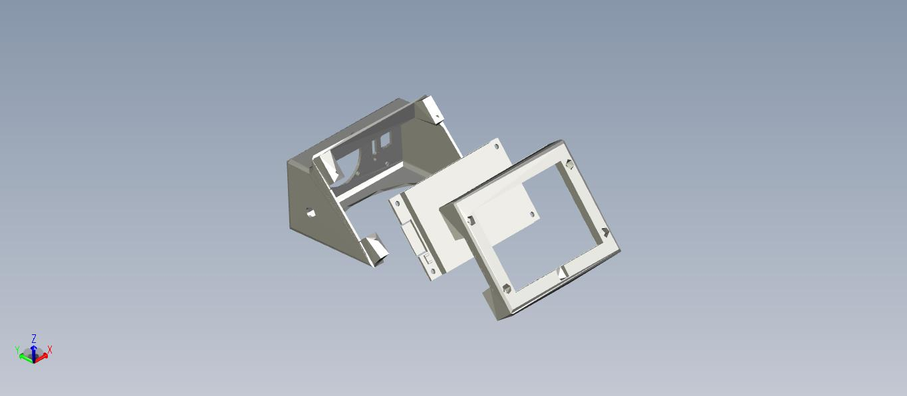

Touchscreen
Intuitive FX Control at Your Fingertips
Intuitive FX Control at Your Fingertips
The Showduino touchscreen interface brings a sleek and powerful control panel to life using the ESP32 display board. This interface lets you navigate menus, control brightness, launch diagnostics, and more.
The UI supports long-press detection for advanced options, and all buttons feature glowing visual feedback. Future plans include gesture support and multi-touch functionality if the hardware allows.